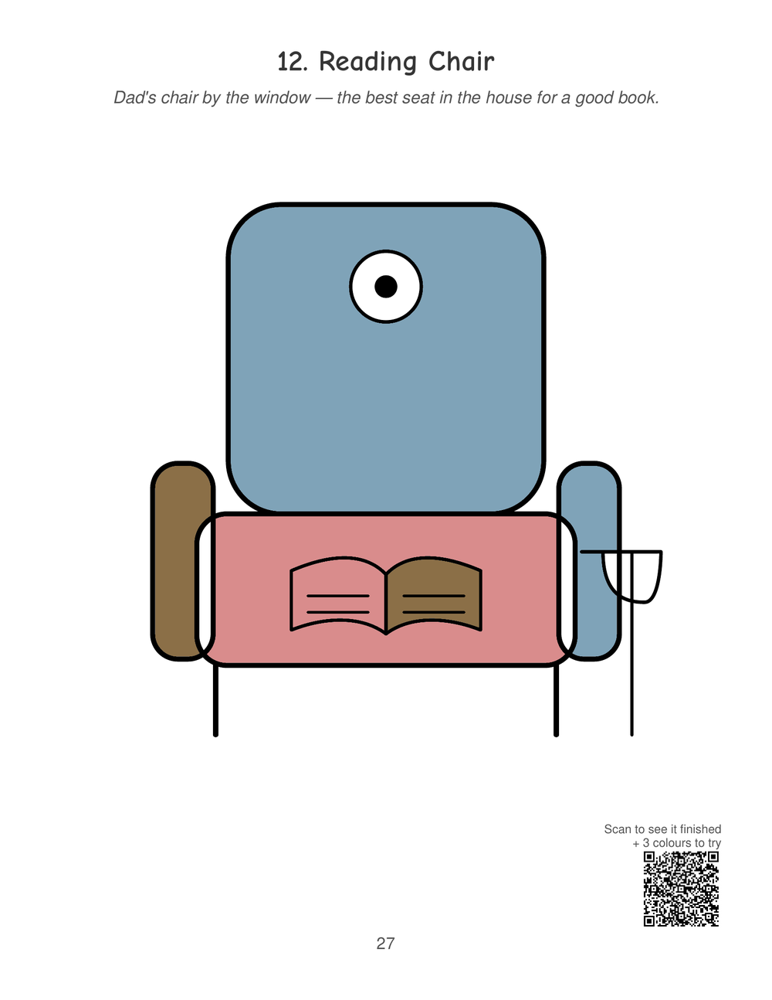

“Dad's chair by the window — the best seat in the house for a good book.”

Tap a colour above, then tap a part of the picture below. Try the palette together before you touch the paper page. Nothing here changes your book — this is only a preview.
This page is a free helper for the book Bold & Easy Colouring for Seniors: Calm Nostalgic Comforts. The book is complete on paper alone — you do not need this page to enjoy it. It needs a phone with internet.